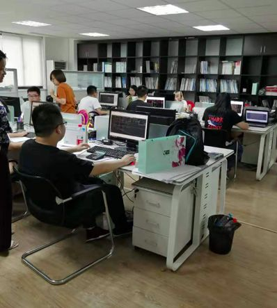
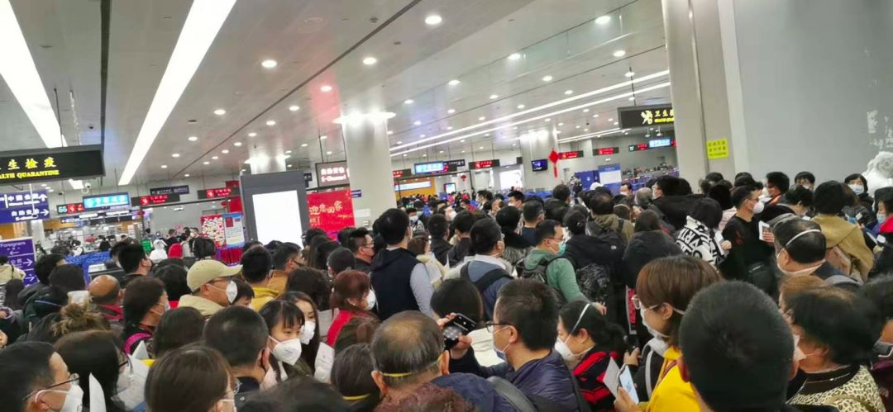

口述实录｜疫情席卷下，一个普通武汉市民的30天心路历程
原文链接 备份链接 我住在汉口，是这次疫情的重灾区。那个被查出疫情源头的华南海鲜市场，就在火车站对面，离我家大概20公里。我希望疫情早日结束，对我们国家的经济影响小一些，所有人都能够平安和健康。 口述 | 小 玲 整理 | 沈 林 我叫小 …
我想说，我们再困难也会响应政府号召，去打赢这场新冠肺炎病毒阻击战！
口述 | 李安定
整理 | 金 姬
我是70后上海人，生于斯长于斯。大学毕业之后的十几年间，我主要从事机电设计顾问方面的工作，在美资、港资和内地几家大企业都做过。
8年前，我开始创业，在上海开了一家建筑设计公司，主要给楼宇建筑做机电设计等工作。去年9月，随着公司业务的不断扩展，我们搬到了徐家汇，目前有员工20人，算是一家小微企业吧。

2019年公司搬到了新办公室
两次危机化险为夷
都说创业不易，公司成立8年来，我已经平稳度过两次大风浪。
第一次是2016年。大家应该还记得2016年先热后冷的楼市吧——年初“化解房地产库存，促进房地产业持续发展”被中央确定为“三去一降一补”的重点任务之一，房价一下子涨起来。于是，7月、11月的两次中央政治局会议均提出“抑制资产泡沫”，下半年政府倡导“房子是用来住的，不是用来炒的”，楼市又冷了下去。而我们当时的客户主要是地产商，所以服务的很多地产公司都停了项目。
对于我而言，当时每个月都是举步维艰，项目奖金基本没法发。这个过程大概有半年，直到我们后来把客户对象转向酒店旅游业，公司才渡过难关。
说实话，自从转战酒店业后，我们公司的业绩就开始蒸蒸日上了。忙的时候，项目都来不及做，人员也增加了三分之一。
公司的第二次危机是在去年中美贸易摩擦期间，我们的项目并没有之前那么好。但我们抓住了“一带一路”倡议的商机，在西部一些城市找到了酒店项目，总体还是趋于稳定并偏上，直至现在新冠肺炎疫情爆发。
2019年公司获得洲际酒店集团智选假日酒店最佳机电顾问奖项。
春节欧洲游，差点回不了国
忙了一整年，我很早就预定了今年春节陪老婆孩子跟团去西班牙、葡萄牙旅游。我们是1月21日从上海出发，当时钟南山刚刚宣布此次新冠肺炎会人传人。我们也没觉得有多可怕，到了国外就发现问题愈来愈严重，武汉封城了，国内口罩都断货了。所以大家每天玩起来也不是很尽兴，朋友圈都在讲武汉和新冠肺炎疫情的事，我和同事也都微信聊这个。
一开始到葡萄牙的时候，大家也都没戴口罩游玩。

后来到了一个景点，据说边上是湖北过来的旅行团，我们就很紧张，全都戴上了口罩。

雪上加霜的是，我这次在国外旅游差点回不来。旅行团原来买好德国汉莎航空2月2日的回程机票，可是随着国内新冠肺炎疫情越来越严重，汉莎航空从1月29日宣布停飞全部中国内地航线。大家手忙脚乱只能改搭阿联酋航班回来。当时庆幸，幸好自己跟团游，如果自助游，估计回国机票都抢不到。
我们在西班牙机场，还自告奋勇帮浙江一个民间团体带一些口罩和防护服回国。我们每人有30公斤的行李托运限额，除了自己行李，剩下的行李重量指标尽量留给托运的防疫物资用，也算为国内抗击新冠肺炎疫情尽点绵薄之力。
让大家担心的是，飞机上还有二十几个湖北人。所以回国后的检验检疫流程就很麻烦，我现在也自觉在家隔离。

公司最艰难的时刻
最让我担心的是，我们公司在内地很多项目很难年后正常开工，因为一些城市都封了，农民工都回不去了。我回来后让项目经理一个一个电话问过了，我们参与设计的所有在建项目都不知何时复工。
其实不是我一家，我们这一行对此次新冠肺炎疫情造成的影响都很着急。做我们这一行的主要集中在北京、上海和深圳三地，上海大概有同行大大小小几十家吧。大家一致认为上半年新的项目不会开工，旧的项目何时复工也说不准，应收账款也难以收回。
我这样的小公司，最大的开销是人力成本，干我们这一行的都是资深专业人士，人工并不便宜。房租大概只占到支出10%，所以即便政府出台减免租金的政策，纾困效果也有限。
根据《中欧商业评论》刊发的清华、北大联合调研995家中小企业的报告，受此次新冠肺炎疫情影响，85.01%的中小企业维持不了3个月生存。我让公司财务算过，按照目前的流动资金，最多也只能撑三个月。如果三个月后情况没有改善，我不得不降薪或裁员。
和前两次风浪相比，我觉得目前是公司最艰难的时刻。按照上海市政府规定，我们企业下周一（2月10日）复工，但像我这样的还要在家继续隔离，还有一些外地员工都还没回来。虽然项目都没恢复，人员都没到齐，但我五险一金还是要发的。其实，企业在每个员工身上花的钱是员工工资的 1.5-1.7倍，多出来的钱，绝大部分缴纳了社保、公积金、场地费。此次疫情下，政府若有相关减负政策出台，我们也许可以多撑一阵子。
2月8日，《上海市全力防控疫情支持服务企业平稳健康发展的若干政策措施》出台，其中主要租金方面的政策对我们这样的小微企业有实实在在的帮助。至于其他内容，需要复工后让同事去具体核实一下。
最后我想说，我们再困难也会响应政府号召，去打赢这场新冠肺炎病毒阻击战！
征集令
“战疫”成败，匹夫有责。
《新民周刊》现面向全国征集新冠肺炎采访对象和真实故事：
如果你是参与抗击新冠肺炎疫情的医护人员或其家属，我们希望聆听你的“战疫”故事，也希望传达你的诉求。
如果你是确诊、疑似患者本人或家属，我们希望了解你和家人如何“抗疫”的过程，让外界了解你的真实经历。
如果你是疫情严重地区的普通市民，我们希望展现你的乐观，并倾听你所需的帮助。
如果你是公共服务人员或各类捐助者，我们希望看到你的“最美逆行”，记录下你的无私。
……
抗击新冠肺炎疫情，我们诚征对疫情了解的社会各界人士，提供相关线索，说出你的故事，让我们用新闻留存这一切。
《新民周刊》新冠肺炎线索征集值班编辑联系方式（添加时请简要自我介绍）：
周一：应 琛 微信号：paulineying0127
周二：金 姬 微信号：gepetta
周三：黄 祺 微信号：shenwen-2020
周四：周 洁 微信号：asyouasyou
周五：孔冰欣 微信号：kbx875055141
周六：吴 雪 微信号：shyshine1105
周日：姜浩峰 微信号：jianggeladandong
新闻是历史的底稿，你们是历史的见证者。期待你的故事、你的线索！

▼
大家还都在看这些
▼
转载请在评论区留言，获得授权！
转载时，须注明作者、出处和微信号


原文链接 备份链接 我住在汉口，是这次疫情的重灾区。那个被查出疫情源头的华南海鲜市场，就在火车站对面，离我家大概20公里。我希望疫情早日结束，对我们国家的经济影响小一些，所有人都能够平安和健康。 口述 | 小 玲 整理 | 沈 林 我叫小 …
原文链接 备份链接 平时生活节奏太快，就像开车开到120码，突然停下，大家都不适应。 口述 | 严 欣 **整理 | 王仲昀** 很多温州人在外经商，每到春节就要回老家过年，我们一家是年前从上海回来的。 全国人民都在新闻中看到，约18万温 …
原文链接 备份链接 疫情发展 根据丁香医生实时数据，截至 2020 年 2 月 6 日 18 时，全国累计确诊病例 28129 例，疑似病例 24702 例，新增确诊病例 3766 例，新增疑似病例 5328 例。其中，重症病例 3859 …
原文链接 备份链接 编者按：上海市第一人民医院呼吸科的谢国钢医生，2月1日报名了支援上海公共卫生临床中心医疗队。清晨5点，值班的他接到了报到的电话通知，连家都来不及回，就匆匆奔赴了“战场”。要知道，谢国钢医生12月份才刚刚结束为期半年的援 …
原文链接 备份链接 从1月23日“封城”到元宵节，已经过去整整17天。即使我每天忙于记日记，也觉得时间过得很快啊。 过去我要早起，6点起床，7点到办公室，不堵车。现在则是天天睡到自然醒，有点提前退休的感觉。虽然我还有两年上班的时间。 …